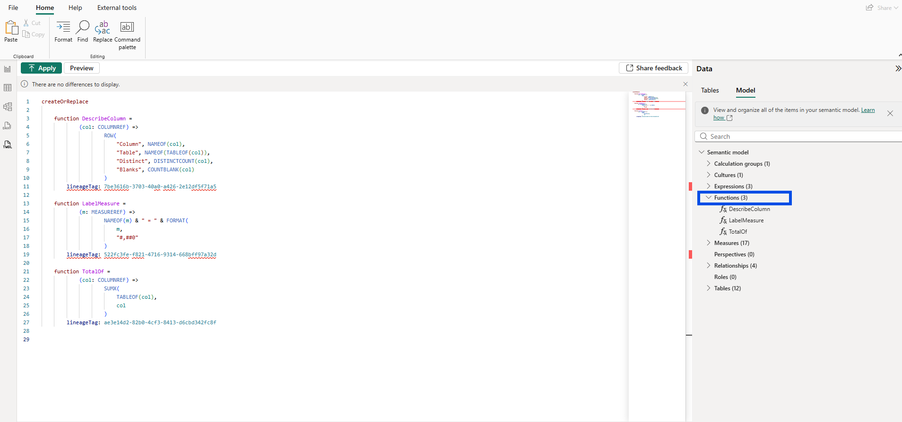
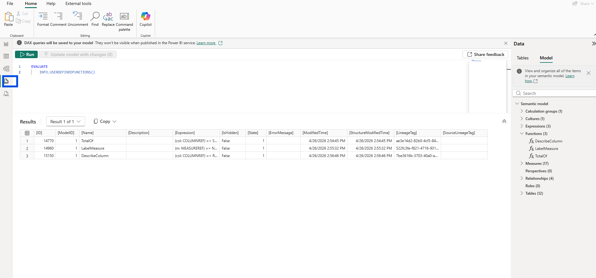
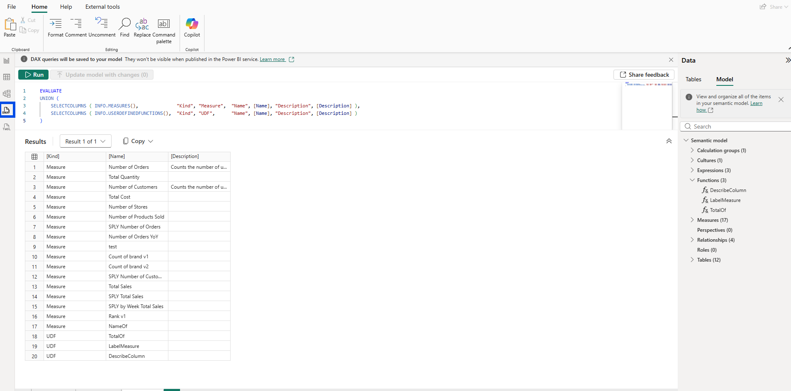
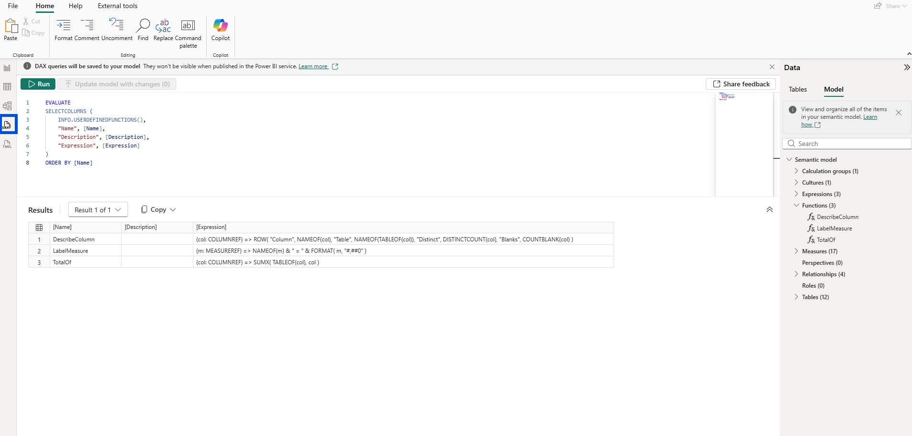
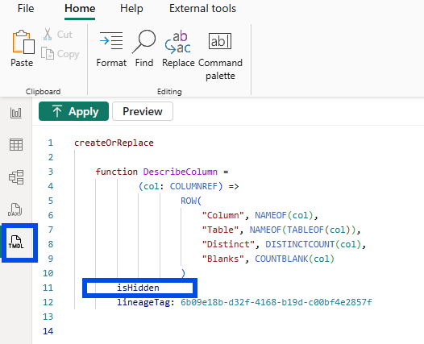
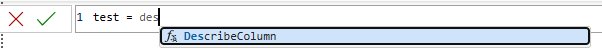
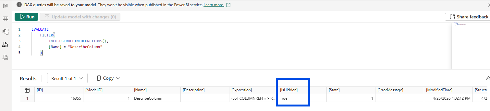
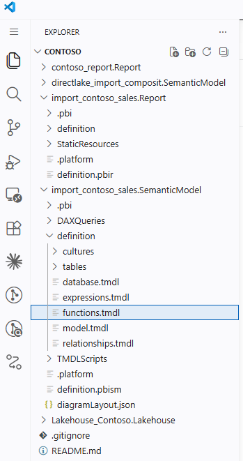

In this writing, I want to share how running INFO.USERDEFINEDFUNCTIONS against my Contoso semantic model surfaced one small metadata column I wasn't expecting, and how following that single column led me to a documented preview limitation I hadn't read about before.
I didn't expect a routine introspection query to teach me about UDF governance. My plan was simple: I had three DAX user-defined functions sitting in my model, and I wanted to see how the new INFO function would describe them. Instead, I ran an experiment that didn't behave the way I assumed it would, and then opened the Microsoft Learn documentation to figure out why.
1. The Moment Curiosity Turned Into a Query
Three UDFs lived in my Contoso semantic model. TotalOf accepts a column reference and returns its sum. LabelMeasure accepts a measure reference and returns a labelled string of its value. DescribeColumn accepts a column reference and returns a single-row table with the column name, its home table, distinct count, and blank count. It can only return a table, never a scalar. All three lean on the new NAMEOF and TABLEOF functions to introspect their own arguments.

The TMDL view groups them under a Functions (3) node in Model explorer, peers of measures and tables in the model tree. That positioning alone was already a small shift in how I thought about UDFs. They weren't query helpers anymore. They were model objects.
The natural next step was to point the new INFO function at them.
EVALUATE INFO.USERDEFINEDFUNCTIONS()2. The First Surprise: A Column I Wasn't Expecting

The result returned the columns I expected: [ID], [Name], [Description], [Expression], plus modification timestamps and lineage tags. But there was one column I hadn't anticipated. [IsHidden] sat right between [Expression] and [State], and every row showed False.
Here is the first aha moment that reshaped my understanding: UDFs now expose the same governance metadata surface as measures, columns, and tables. I had assumed UDFs were function-flavored objects that lived alongside the model, and that visibility was something only fields and measures cared about. The column proved otherwise.
I wanted to see how closely measures and UDFs aligned in this introspection layer, so I unioned their results:
EVALUATE
UNION (
SELECTCOLUMNS ( INFO.MEASURES(), "Kind", "Measure", "Name", [Name], "Description", [Description] ),
SELECTCOLUMNS ( INFO.USERDEFINEDFUNCTIONS(), "Kind", "UDF", "Name", [Name], "Description", [Description] )
)
Seventeen measures and three UDFs landed in one result set, distinguishable only by a [Kind] column. The introspection layer treats them as siblings.
A cleaner curated view followed, focused on just the columns most useful for documentation work:

3. Setting isHidden and Watching Nothing Happen
If [IsHidden] was returning False for every UDF, the obvious experiment was to flip one to True and see what changed. I opened the TMDL view, added the isHidden flag under the DescribeColumn function declaration, and clicked Apply.

The flag form (just isHidden, no explicit value) is TMDL shorthand for isHidden: true. After applying, I went looking for the result.
The Functions list in Model explorer still showed DescribeColumn. IntelliSense in the formula bar still suggested it the moment I typed Describe while authoring a new measure.

The popup proposed DescribeColumn as freely as before. Even the DAX query view's autocomplete brought it up without hesitation.
I re-ran INFO.USERDEFINEDFUNCTIONS, this time filtered to the one row I had just changed:
EVALUATE
FILTER (
INFO.USERDEFINEDFUNCTIONS(),
[Name] = "DescribeColumn"
)
The [IsHidden] column for DescribeColumn did update to True. So the metadata had been saved. The TMDL property was being persisted, and the introspection function was reading it back faithfully. But nothing else seemed to care.
This was the second aha moment. Setting isHidden updates the metadata, but doesn't actually hide the function. The TMDL stores the property. The engine returns it through the INFO function. The runtime and UI haven't been wired to honor it yet.
To be precise, hidden measures and columns stay visible in Model explorer and IntelliSense too, since both are developer surfaces. The isHidden property hides them only from the Data pane in Report view, the report-author surface. UDFs don't currently appear in the Data pane the way measures and columns do, so there isn't yet a natural consumer surface where the isHidden flag would have a visible effect. That helps explain why the documentation calls hide/unhide unsupported during preview today: the property is captured in TMDL, but the surface where it would matter doesn't exist yet.
4. What the Documentation Actually Says
I opened the Microsoft Learn page on DAX user-defined functions and scrolled down to the Considerations and limitations section. Under its General subsection, alongside the other current preview restrictions, the documentation calls out that hiding or unhiding a UDF in the model is not currently supported.
That single line explained the entire experiment. Power BI is treating UDF hiding as a property the model can record but the runtime intentionally doesn't honor yet. The metadata is forward-compatible, ready for the day governance enforcement lands. For now, the property is a placeholder waiting for its runtime to catch up.
5. From a DevOps Standpoint, This Is Foundational
Version Control
Because TMDL persists isHidden on a UDF even though the UI ignores it, the property survives every commit into definition/functions.tmdl of a Power BI Project.

When the runtime starts honoring the property, models that already declared their intent will simply start behaving correctly without a TMDL migration. Recording governance intent today protects future-you.
Code Review
Reviewers can enforce hiding conventions on UDFs in pull requests today. The text is already in the diff. The fact that Desktop won't act on it yet doesn't stop a team from agreeing that helper UDFs ship with isHidden: true, and that a missing property fails review.
Validation
External tooling that scans TMDL or queries INFO.USERDEFINEDFUNCTIONS can already build governance reports that flag UDFs intended to be hidden but still discoverable. The introspection layer makes that scan possible. This is exactly the surface my PBIP Documenter work has been operating on for measures and columns, now extended to UDFs.
Documentation
Self-documenting tools that consume the INFO output can render hidden UDFs differently from public ones the moment teams decide to mark them, regardless of whether Desktop honors the property. Documentation systems get to be ahead of the runtime.
Closing Thoughts
This experience left me with a new mental model: DAX UDFs have arrived as introspectable model objects, but they haven't yet arrived as governable ones. The metadata is there. The introspection function returns it. TMDL persists it. The moment you try to act on a property like isHidden, the gap shows up.
That gap is a useful one to know about. It tells me where DAX UDFs are in their lifecycle, and it tells me where to invest tooling effort while the runtime catches up.
I hope this inspires you to run INFO.USERDEFINEDFUNCTIONS against your own models and pay attention to which columns surprise you.